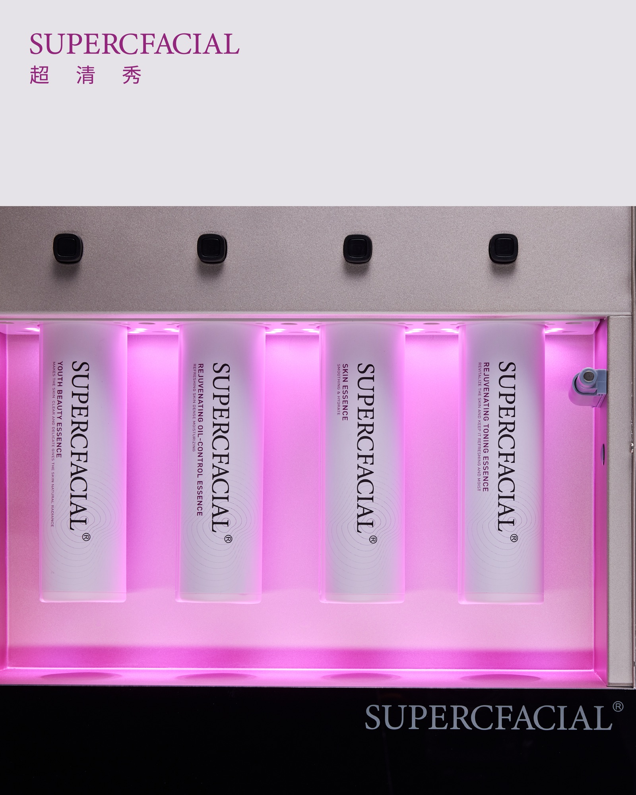
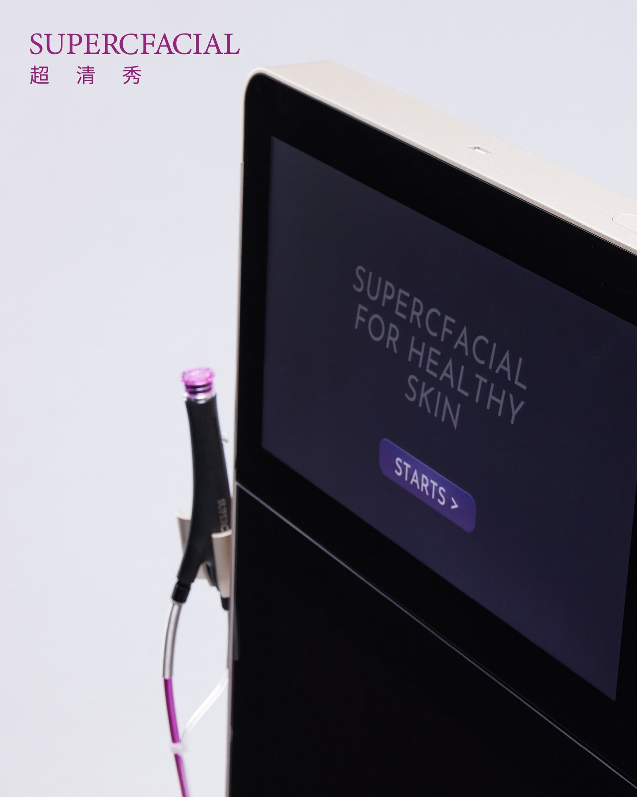
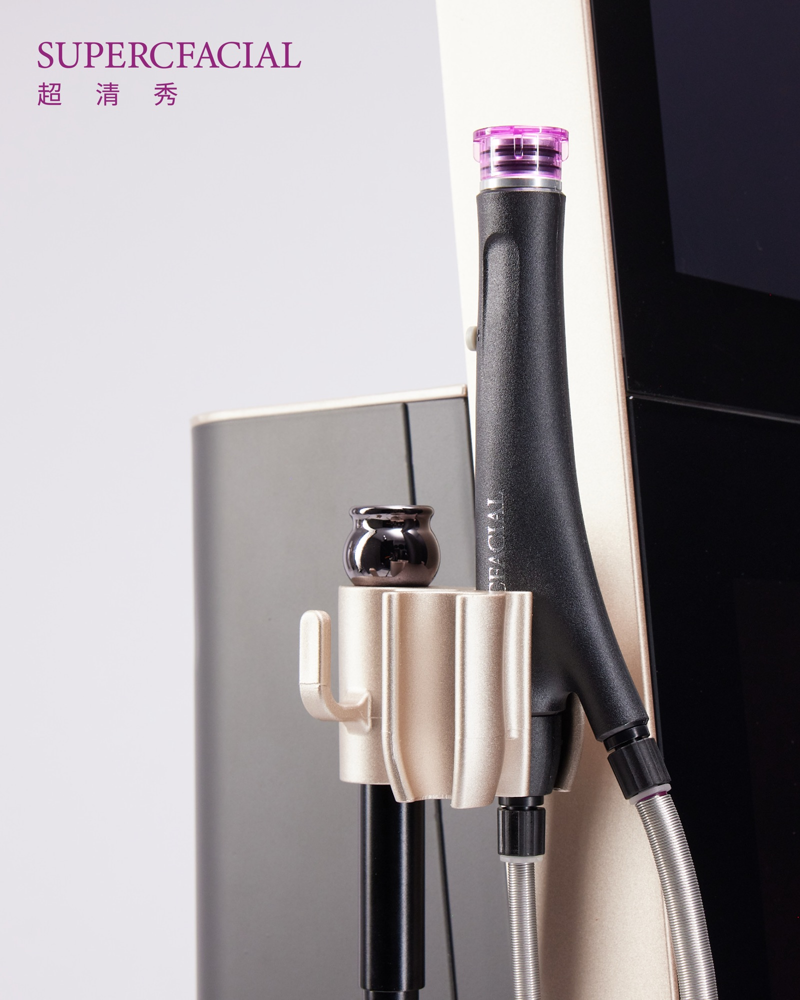

課程流程 · The Course
約 90 分鐘，
五個步驟
- 清潔洗臉，把肌膚表面清乾淨。
- 角質處理依當日膚況選擇合適的產品，肌膚泛紅或較敏感時改用溫和的配方。
- 手清粉刺以低刺激的手法清理粉刺。
- 超清秀水飛梭全臉操作，約 30 分鐘。探頭一客一換。
- 敷膜敷上凍膜並覆蓋紗布，靜置約 15 分鐘。


來自英國的水飛梭，流體清潔加上手清粉刺。過程溫和，敏感肌也適用，適合想把毛孔清乾淨、又不希望肌膚受到刺激的您。

一邊送入精華液，一邊帶走髒污與老廢角質
SUPERCFACIAL 超清秀是一台來自英國的水飛梭儀器。原廠稱它的核心為 Duflowtex 雙動力流體旋渦技術：探頭一邊送出精華液，一邊把帶著髒污與老廢角質的液體吸走，一進一出同步運作。因為靠的是流體循環，接觸肌膚的感受細緻而溫和。


價格單位為新台幣。保濕導入可加購，400 元。首次體驗價限第一次來店。
可以，超清秀適用於敏感肌。到店會先看您當天的肌膚狀況，若當下泛紅或較敏感，角質處理會改用較溫和的產品。
不會。超清秀的探頭一客一換，每位客人使用的都是全新的探頭。
經典管理是手清粉刺加上保濕導入，單次 2,080 元。超清秀在手清粉刺之後，多一道水飛梭的流體清潔，單次 3,000 元。
水飛梭是以流體循環的方式清潔，過程溫和。手清粉刺採低刺激的手法，過程中會隨時與您確認感受。
約 90 分鐘，包含清潔、角質處理、手清粉刺、超清秀與敷膜五個步驟。
可以，保濕導入加購為 400 元。